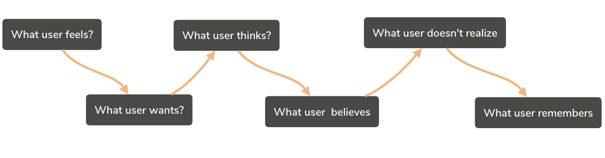
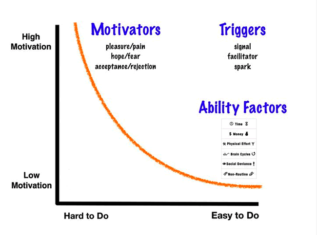
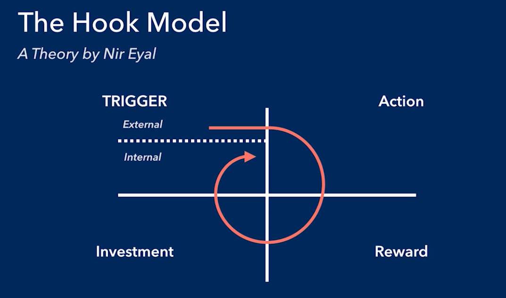

User Experience
The Greatest Hits
|
|
-
Davi Vieira
-
Software Engineer
-
Javascript fan-boy
-
Cooking Enthusiast
-
Knowledge Sharer
|
Question #01
When did we start to think about UX?
Wait... that's not the correct question.
 Question #1
Question #1
Why do we care about UX?
What are we going to talk about today?
-
Information Architecture
-
User Research
-
User's Psychology
-
Storytelling
-
UX Future
|
|
Definition:
Structural design of an information systems, interactive systems, and
user experiences. The organization, search, and the navigation systems
that help people to complete tasks, find what they need, and
understand what they've found.
Wait! There's a better way to understand this topic!
Confusion
??????????????????????????????
Something needed to be done!
Information Architects and the...
Website Tree
Question #2
And then, something dramatic happened...
What?
Question #3
What is IA all about?
How to organize?
Flat x Deep
User Research
Understanding your product!
Question #4
In which stage of development should we use User Research?
Since we need ways to do it...
Let's meet them
-
Why users prefer a website over another?
-
Why user clicks first this button than that one?
-
Why do people share my product?
-
Why one page design will be better then other?
Intuition
Understand the effect of your actions without use of reason
What makes a product intuitive?
What makes an experience?

Emotions
It all starts here
| When I feel... |
...I use |
| Lonely |
Facebook |
| Hungry |
Yelp, Grubhub |
| Unsure |
Google |
| Anxious |
Email |
| Lost |
GPS |
| Mentally Fatigued |
ESPN, E! |
Motivation
Why people do things? And why others don't do what we want them to do?
1. BJ Fogg's Behavior Model
Behavior = Motivation + Ability + Triggers

2. Psychological Flow State
The Habit Forming programs

Question #5
Name the keywords of User's Psychology